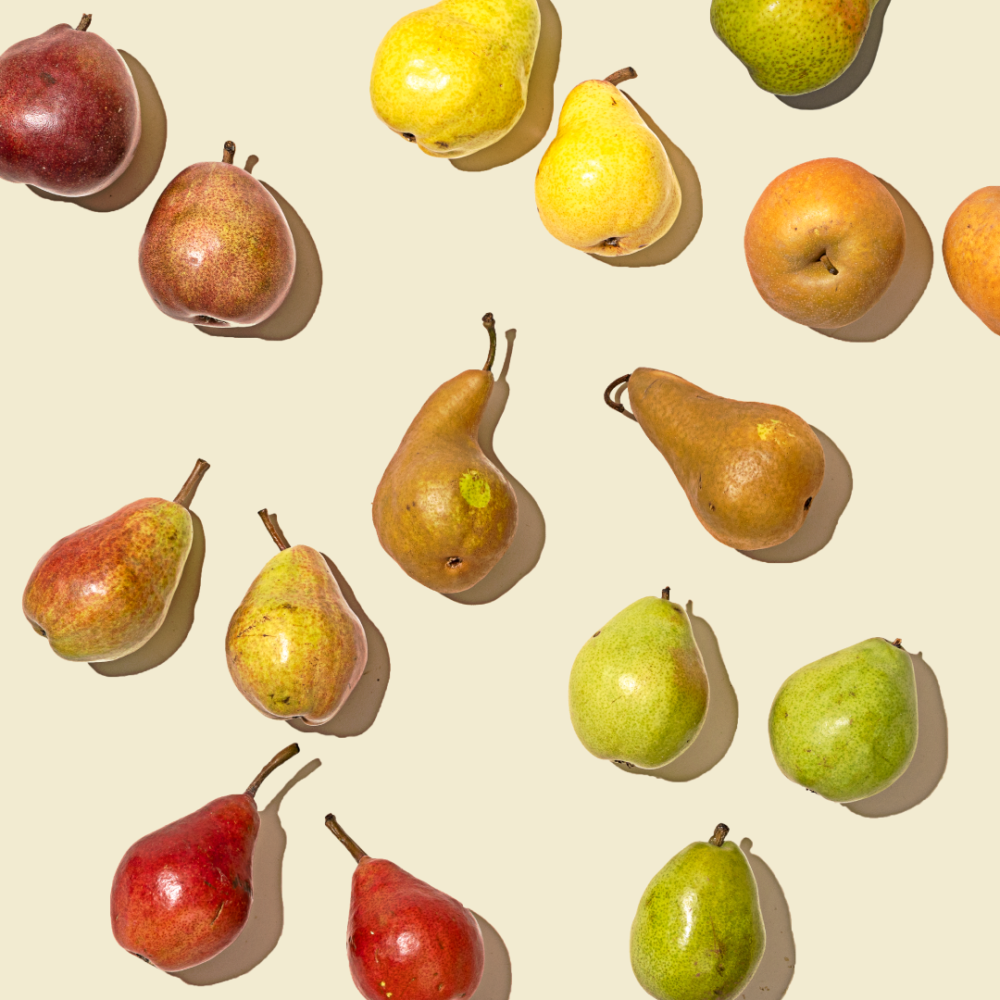

What is a Pear?
Imagine being handed a fruit you’ve never seen before: it fits comfortably in your palm, with a rounded bottom that curves upward into a narrower top, almost like a soft teardrop. This is a pear. Its skin is thin and smooth, sometimes bright green, sometimes golden yellow, and occasionally brushed with red or brown. When you press it gently and it yields slightly to your touch, you know it is ripe. Slice it open and you’ll find pale, creamy flesh inside, surrounding a small cluster of seeds at its center. The texture is tender and juicy, with a subtle graininess that makes it feel delicate as you chew. The flavor is mild and sweet, not sharp like some fruits, but smooth and fragrant, with a light floral note.
Pears can be enjoyed fresh as a simple snack, paired with cheese, baked into pies and pastries, or simmered gently with spices until they become soft and aromatic. For someone new to it, a pear is an inviting, easygoing fruit, gentle in taste, pleasant in texture, and quietly satisfying.
How Can I Use It?
Pears are wonderfully versatile and can be used in many different ways, both sweet and savory. Most commonly, they are eaten fresh as a simple snack or sliced into salads for a touch of natural sweetness. In desserts, pears can be baked into pies, tarts, and cakes, or poached gently in syrup or wine to create a soft, elegant dish. They can also be cooked down into jams, preserves, or fruit butters, and blended into smoothies or juices. In savory cooking, pears pair well with cheeses, nuts, and leafy greens, and they can even be roasted alongside meats to add a subtle sweetness to the dish. Dried pears make a convenient snack, while pear purée can be used in sauces or as a natural sweetener in baking. Their mild flavor and juicy texture make them adaptable to many recipes and occasions.
Extra Details
Pears represent an extraordinarily heterogeneous category of fruit, encompassing an extensive array of cultivars
that exhibit considerable variation in morphological character